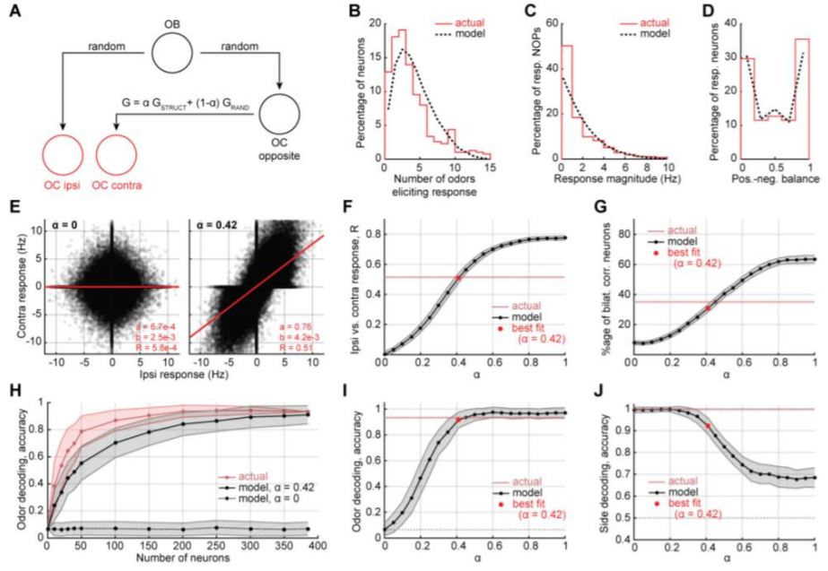

Have you ever wondered why we have two nostrils? Humans are mostly symmetric, especially when seen from the outside; so perhaps it might make sense to have two nostrils. But, there are many cases of asymmetry in the human body: we have one heart on the left side of our body, our lungs are lopsided, and we have only one mouth. Perhaps you could imagine a version of a human that had one large nostril in the middle of our face, why not?
Well, we can learn something from the example of our ears (of which we tend to have two). Our brains make use of the two independent sensors to calculate distances. By measuring the separation in time between a sound hitting first one then the other ear, the brain calculates the direction that the sound came from: for example, if the sound arrives at the left ear first it must have come from the left side. If you've ever seen your dog cock their head it is supposedly to improve this locating ability.
So, could the brain be doing something similar with two nostrils? By comparing between the two of them it might be able to locate the direction your dinner is coming from? (Another theory is that you have to have two so one can always be cleaned! This involves sending lots of cleaning fluid through the membrane at the top of your nose, causing it to expand. This cleaning oscillates between your nostrils every few hours, which is why when you have a cold one nostril tends to be blocked, and which one changes every few hours: it's the cleaning schedule!)
In this study my colleagues measured the brain's response to smells when they arrived in either the left or the right nostril of some nice lab mice; perhaps by seeing how the brain responds to odours in each nostril we could begin to understand the function dual nostrils serve. We found that the brain's response to left and right nostrils were remarkably similar. This was particularly surprising given recent findings, which led us to conclude that some mechanism must ensure the response to left and right nostrils are the same. I built a model illustrating one potenital mechanism and showed that it agreed with the experimental data. This suggests that early in life the brain learns to to align the response to different nostrils: i.e. in very young children perhaps oranges do smell different depending on which nostril you use, but this difference disappears as you grow up!
So, no conclusive answer to why we have two nostrils, but our study added a piece to the ongoing puzzle!
Our research was motivated by two facts. First, a person’s two nostrils are independent measuring devices that do not share information with each other before reaching the cortex. Second, olfactory information is scrambled between the nose and the brain, with each olfactory cortical neuron connected to a random subset of those in the nose. Taken together, this means that each brain hemisphere is presented with a differently scrambled, seemingly inconsistent, window onto the olfactory environment. We therefore asked: ‘does the olfactory cortex align these two pictures? And if so, how?’
To answer these questions, our experimental collaborators in Professor Venkatesh Murthy’s group recorded neurons from the olfactory cortex of mice as odours were presented selectively to each nostril. From their recordings, we demonstrated that responses to odours from the left and right nostrils are highly correlated in each side of the brain. In contrast, I demonstrated that a random intercortical connection would lead to an uncorrelated representation, hence the connection must be somehow structured. Further, I built a computational model that illustrated how matched odour representations could readily arise from conventional Hebbian plasticity. The structured interhemispheric connectivity we unearthed demonstrates that the brain builds consistent internal representations, even when presented with seemingly inconsistent inputs
Read the paper here.
Figure 1: (A) Diagram of the model. (B) - (D) Show the model matches the distribution of responses observed in the data for (B) how many odours trigger each neuron, (C) how much the neurons are activated, and (D) the percentage of the time each neuron is activated rather than inhibited. (E) - (J) Make various comparisons between the model and the data as alpha is changed from 0, a random connection between the two olfactory cortices, to 1, a purely Hebbian structured connection. We can see that around alpha = 0.4 the data is best matched. In fact, it fits really well, given how simple the model is!
One reason for exploring this is certainly curiosity, in fact that might be the only reason, who doesn't want to know why we have two rather than one, three, or forty nostrils?!
But one form of the curiosity is particularly intriguing. Many recent in advancements in cutting-edge AI have come from incorporating aspects of visual neuroscience into artificial neural networks (creating convolutional neural nets - CNNs). But the visual system shows only one form of biological sensory processing, and a form of processing that is particularly tuned to the characteristics of visual stimuli (for example two neighbouring pixels in a random image have a high likelihood of being the same colour, CNNs make use of this). Our sense of smell has learned to process a completely different form of sensory data - odorants, mixtures of chemicals, and the number of potential chemicals is vast. This form of data is much harder to understand with a CNN, and shares some similarities with other 'high-dimensional datasets' like genetic data. Perhaps by understanding the tricks the nose uses to make sense of smells we can improve our artificial methods of understanding high-dimensional data.